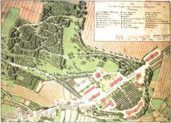

Getrennte Entwicklung in Schaumburg nach 1647 - Grafschaft Schaumburg hessischen Anteils
 Plan von den Anlagen beim Nenndorfer Schwefelbade
von F. Schüler, 1807
In der reichsrechtlichen Theorie bestand die Grafschaft Schaumburg fort. Praktisch gingen beide Landesteile nunmehr getrennte Wege. Der südöstliche, hessische Teil mit dem Regierungssitz in der seit 1665 zur Festung ausgebauten Stadt Rinteln war mit der Landgrafschaft (ab 1803 Kurfürstentum) Hessen-Kassel in Personalunion verbunden (bis 1821), staatsrechtlich jedoch selbständig; darüber wachten nicht zuletzt die Schaumburger Stände, die in Rodenberg beziehungsweise seit 1651 in Rinteln ihre Landtage abhielten. Geändert wurde dieser Zustand, als in den Umwälzungen des beginnenden 19. Jahrhunderts die politische Landschaft neu formiert wurde: Der hessische Teil der Grafschaft Schaumburg mit Rinteln wurde 1821 mediatisiert und als "Landkreis Grafschaft Schaumburg" der Regierung in Kassel unterstellt. Mit dem Anfall Hessens an Preußen wurde im Jahre 1866 auch der "Kreis Rinteln" (so benannt 1866-1904) preußisch. Er wurde der Provinz Hessen-Nassau unterstellt, bis er im Zuge der Verwaltungsreform von 1932 der (ebenfalls seit 1866 preußischen) Provinz Hannover einverleibt wurde. Die kirchliche Verwaltung folgte dem nach, so dass dieser Teil Schaumburgs zur Evangelisch-Lutherischen Landeskirche Hannover gehört.von F. Schüler, 1807
Seit 1667 begannen die Hessen mit ihrer merkantilistischen Peuplierungspolitik, die sich bis ins 18. Jahrhundert fortsetzte. Unterstützt von der landgräflichen Regierung, entstanden das heutige Hessendorf, die Bergarbeitersiedlung Liekwegen oder die Kolonien Friedrichsburg, Friedrichswald, Friedrichshöhe und Friedrichshagen. Saline und Gesundbrunnen in Rodenberg wurden großzügig gefördert, ehe der Landgraf Wilhelm IX. 1787 in Nenndorf bei den Schwefelquellen ein Badehaus errichtete. In Bachtälern wie Exten, Rolfshagen, Bernsen oder Krückeberg wurden vorindustrielle Eisenhämmer angelegt, die beachtliche Mengen an Messern und anderen Eisenwaren produzierten. Seit Beginn des 19. Jahrhunderts entwickelte sich auch die Glasfabrikation zu einer blühenden Industrie: Die Glashütte "Schauenstein" (Heye) nahm ihren Fabrikbetrieb auf; bald gesellten sich die "Neuhütte" und "Hermannshütte" (Stoevesandt) hinzu; Korbmacher verdienten als Zulieferer in Heimarbeit ihr Brot. Die Sandsteinbrüche und Kohlenbergbauwerke nahmen einen neuen Aufschwung. Die Leinenweberei steigerte ihre Produktion unter industriellen Bedingungen. Tabakfabriken, Ziegeleien und Brennereien kamen hinzu. Doch Bergbau und Glasindustrie mit Zentrum in Obernkirchen wurden zur Leitindustrie in einer ansonsten nach wie vor landwirtschaftlich geprägten Umgebung.
Mit der stürmischen Entwicklung der Industrie hielt der Straßenbau nicht mit; auf einen Eisenbahnanschluss musste man einige Jahrzehnte (Hildesheim-Löhne 1875; Rinteln-Stadthagen 1900; Hameln-Haste 1904; Extertalbahn 1929) warten. Trotz wirtschaftlicher Not und politischer Reaktion blieben die Schaumburger 1831 und 1848 besonnen bis kühl; viele junge Leute suchten jedoch ihr Heil in der Auswanderung, die in den 50er Jahren ihren Höhepunkt erreichte. Wohl nicht zu Unrecht fühlte sich die hessische Exklave Grafschaft Schaumburg - aufs Ganze gesehen - von der Zentrale in Kassel eher vernachlässigt.